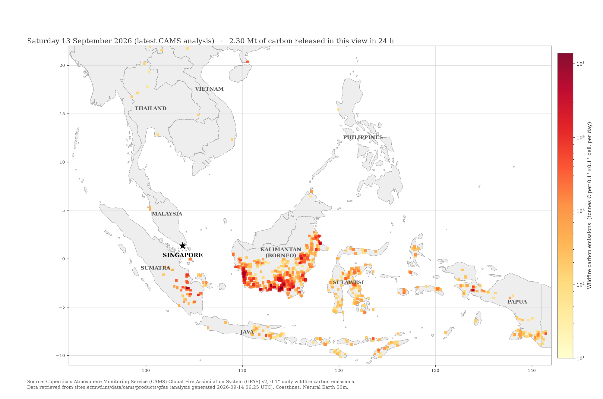
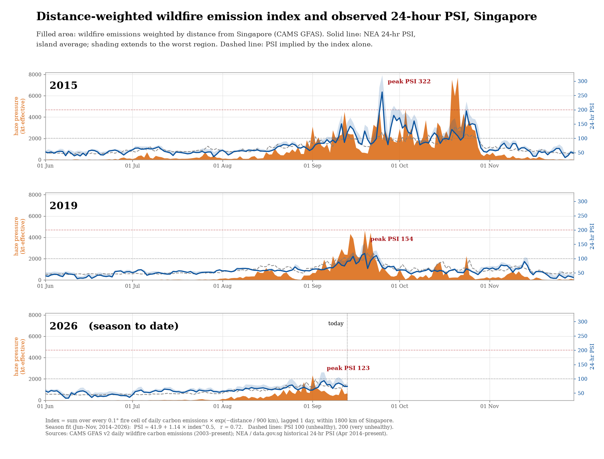
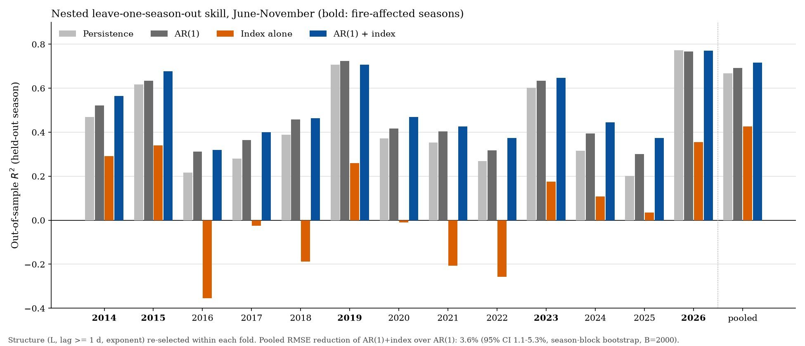
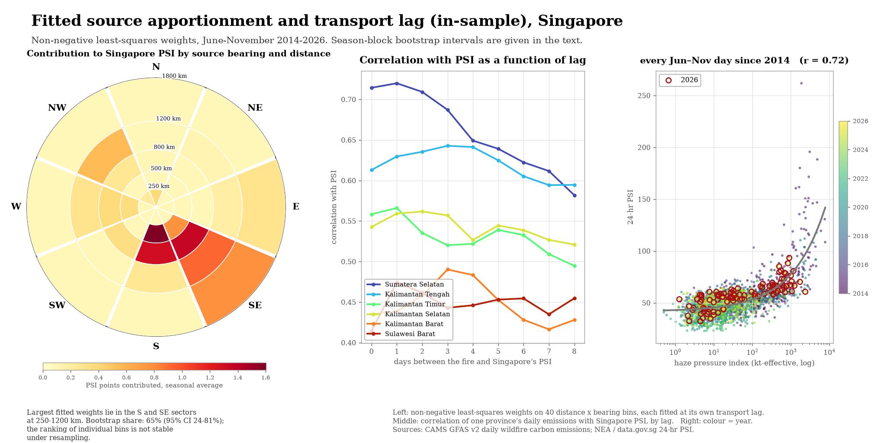
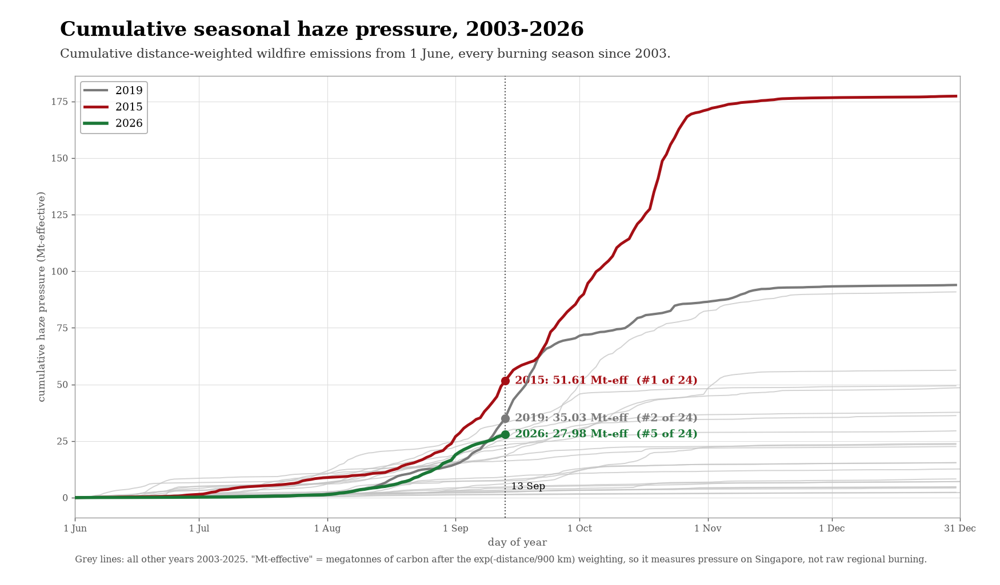

Full text (PDF) · Code and data pipeline
Abstract. Episodic haze in Singapore is driven by biomass burning in Sumatra and Borneo. This note examines how much of the day-to-day variation in Singapore's air quality can be recovered from openly available, near-real-time fire emission estimates alone. Daily wildfire carbon emissions from the Copernicus Atmosphere Monitoring Service Global Fire Assimilation System (CAMS GFAS v2, 0.1°) are aggregated into a scalar index by weighting each grid cell with an exponential decay in great-circle distance from Singapore, and the index is related to the National Environment Agency 24-hour Pollutant Standards Index (PSI) over the June–November seasons of 2014–2026. In-sample, a square-root response to the index lagged by one day with a 900 km decay length correlates with PSI at r = 0.72. Under nested leave-one-season-out cross-validation with forecast-consistent lags, however, the index alone (R² = 0.43) is substantially outperformed by persistence (R² = 0.67). Added to a first-order autoregressive model of PSI, the index reduces pooled root-mean-square error by 3.6% (95% CI 1.1–5.3%, season-block bootstrap), a small but consistent improvement concentrated in the 2015 episode. Non-negative least-squares apportionment over distance–bearing bins places 65% of the fitted fire contribution in the southern and south-eastern sectors at 250–1200 km, with wide uncertainty (95% CI 24–81%). The index is therefore better suited to diagnosing the regional fire situation than to forecasting PSI.
| Model | R², all | RMSE, all | R², fire seasons | RMSE, fire seasons |
|---|---|---|---|---|
| Persistence | 0.669 | 9.39 | 0.689 | 12.41 |
| AR(1) | 0.692 | 9.06 | 0.705 | 12.09 |
| Index alone | 0.426 | 12.36 | 0.436 | 16.71 |
| AR(1) + index | 0.716 | 8.70 | 0.731 | 11.54 |





Hafsi, A. K. (2026). A distance-weighted wildfire emission index for Singapore haze: diagnostic value and limited incremental forecast skill, 2014–2026. Preprint. https://github.com/ahmed-khalil-hafsi/sg-haze
Independent work, not affiliated with or endorsed by ECMWF, the Copernicus programme or the National Environment Agency of Singapore. Data: CAMS GFAS v2 (Copernicus licence); NEA 24-hour PSI via data.gov.sg (Singapore Open Data Licence). This is not health guidance; official air quality information for Singapore is published at haze.gov.sg.